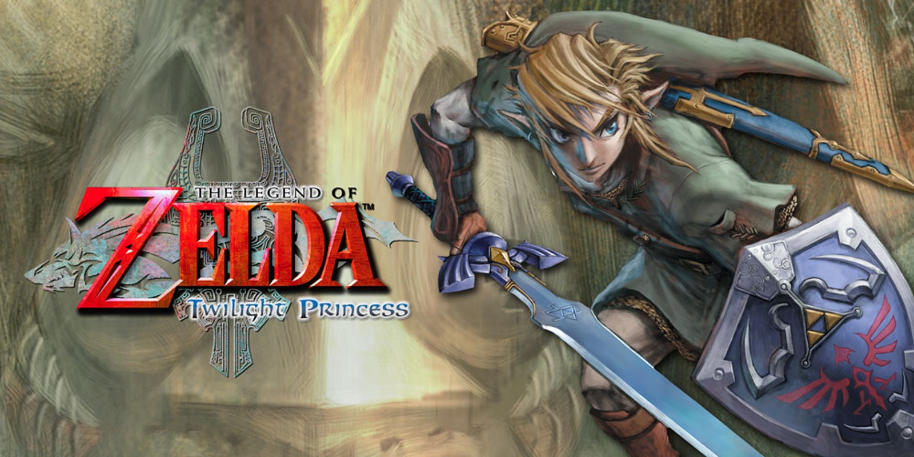

Mais Lidas
Zelda Twilight Princess foi adiado para 2006
O time de desenvolvimento precissa de tempo extra para o polimento do game.
A Nintendo anunciou esta manhã que o seu novo jogo de aventura, The Legend of Zelda: Twilight Princess, foi adiado. O título, anteriormente programado para estrear em novembro em todo o mundo, foi adiado para 2006 para que a desenvolvedora possa continuar a melhorar o jogo.
"Depois de muita discussão, a equipe de desenvolvimento de Zelda pediu mais tempo para adicionar novos níveis, mais profundidade e qualidade ainda maior a Zelda: Twilight Princess", disse o vice-presidente de assuntos corporativos da Nintendo of America, Perrin Kaplan. "Consequentemente, estamos anunciando um novo lançamento global em 2006, após a conclusão deste ano fiscal (31 de março). Forneceremos uma data específica posteriormente. Embora isso possa ser uma decepção para muitos ansiosos fãs, isso certamente enriquecerá o jogo e o levará a vender milhões."
Burnout Revenge (PS2) - Analise
"If fast is what you want, fast is what you'll get."
Criterion estabeleceu uma tarefa e tanto: criar uma sequência do que é sem dúvida o melhor título de corrida arcade de todos os tempos, Burnout 3: Takedown. O referido jogo foi elogiado a torto e a direito não apenas pela crítica e por jogadores em todos os lugares, mas essencialmente por todos nos escritórios da IGN, o que é uma coisa muito, muito rara.
A resposta ao desafio é Burnout Revenge, o quarto jogo da aclamada série Burnout. Como foi o caso do primeiro e do segundo acompanhamento, a Criterion introduziu algumas novas mudanças importantes que visam aprimorar uma experiência de direção arcade já quase perfeita. A Criterion conseguiu aumentar as apostas mais uma vez ou já havia estabelecido seu próprio padrão muito alto? Bem, talvez um pouco dos dois...
GTA San Andreas - Detonado
INTRODUÇÃO
1. Big Smoke / Sweet & Kendl – (CJ) A primeira parte dessa missão é apenas uma cut-scene introduzindo Big Smoke. CJ entra em casa e tem lembranças de sua mãe. Big Smoke aparece com um taco de basebol pronto para espancar o invasor, mas CJ o acalma. Após uma breve conversa, eles vão de carro para o enterro da mãe de CJ. Na segunda parte, você assiste a outra cutscene introduzindo Kendl, irmã de CJ e Ryder, um amigo da família. Eles conversam sobre como a Grove Street Families está sendo cada vez mais massacrada pelas outras gangues. Tudo está correndo bem até que os Ballas aparecem, então a missão realmente começa. Apesar de simples essa missão pode se complicar um pouco porque você está em uma bicicleta e completamente desarmado. Siga Sweet. Quando Sweet sair, siga Ryder. Procure ficar atrás dele e do lado direito. Os Ballas irão se aproximar de você, sempre pelos flancos. Escape dos tiros e siga em frente. Isso se repete algumas vezes até que todos voltam para o Grove. Recompensa: + Respeito. 2. Ryder – (R) Ryder está zangado com os caras da pizzaria, que sempre repintam seus grafites, e ele decide dar um jeito nisso, mas antes ele leva CJ até a barbearia do Reece. Lá, pegue um corte de $50. É barato, mas um bom corte dele não sai por menos de $400. Depois, vá até o Well Stacked Pizza CO. com Ryder e pare no círculo vermelho. Compre algum tipo de comida de sua preferência . Ryder sacará sua arma e apontará para o cara da pizzaria, CJ levará um susto e falará algo, dando tempo ao cara de sacar uma shotgum. Fuja e entre no carro. Dirija de volta ao Grove. Recompensa: + Respeito.